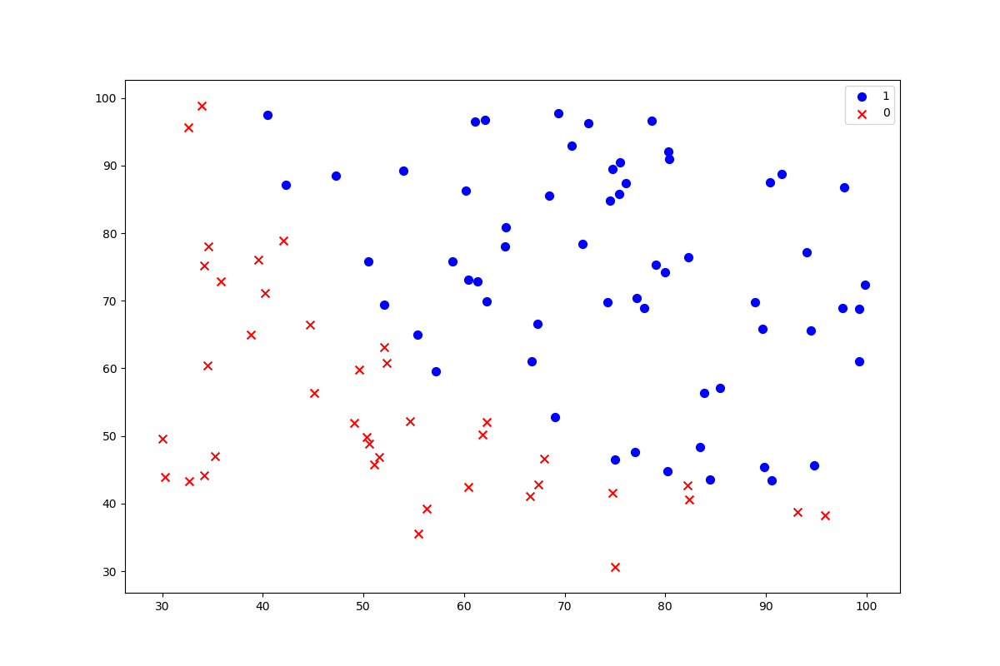
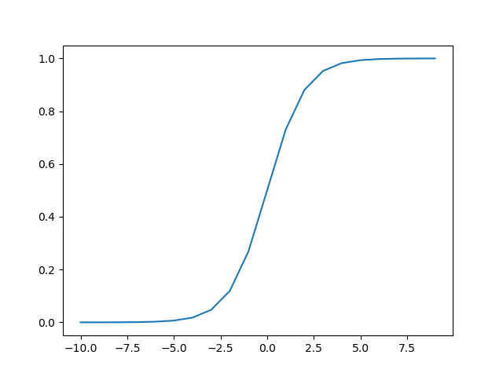
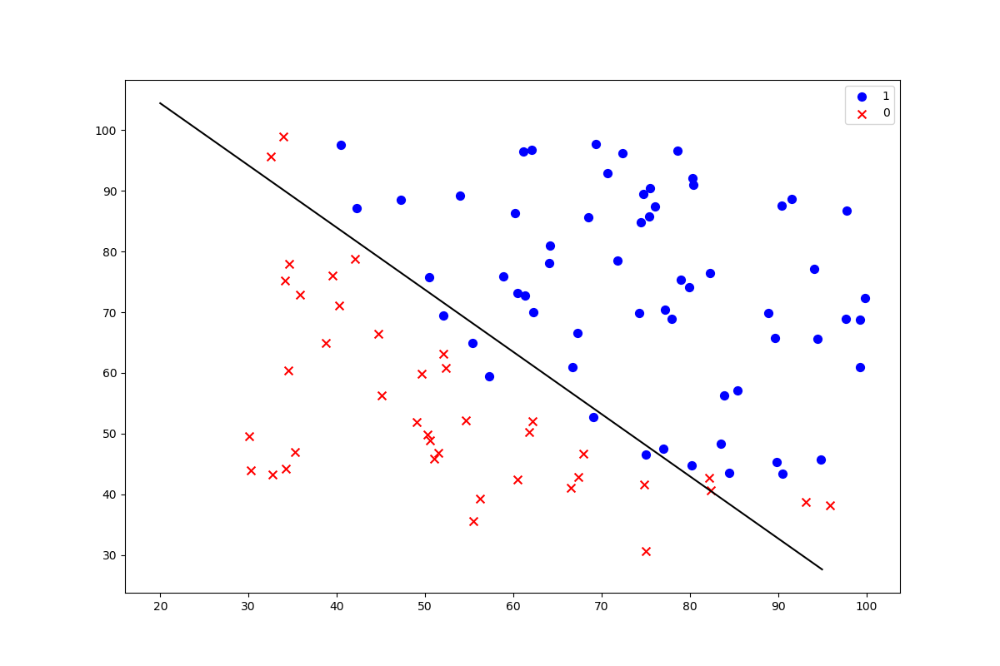
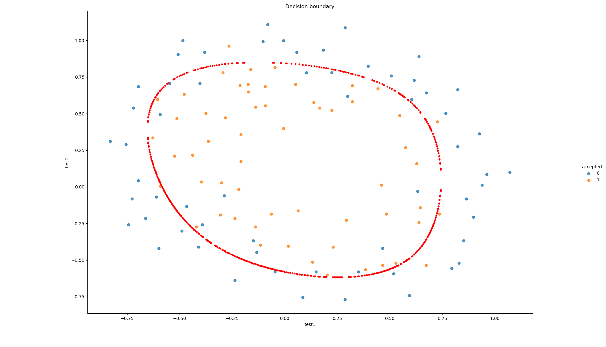
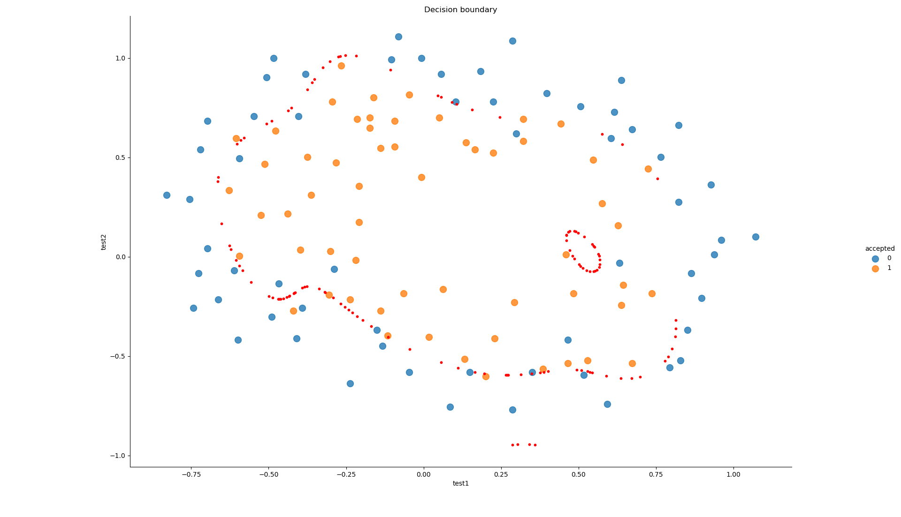
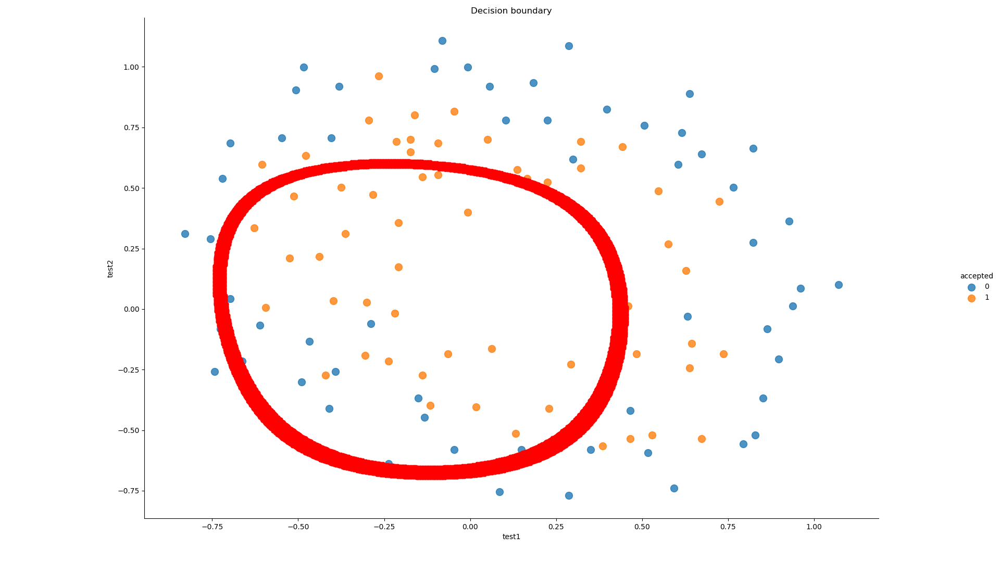

AndrewNg 机器学习习题ex2-logistic regression
练习数据ex2data1.txt和ex2data2.txt都是由三列数字组成的文本文件，前两列是特征，第三列是结果，结果只有0和1两种。
浏览数据
画出散点图，观察两个不同结果的分类情况，有明显的决策边界。1
2
3
4
5
6
7
8
9
10
11
12
13
14
15
16
17
18
19
20
21
22
23
24
25
26
27
28import numpy as np
import pandas as pd
import matplotlib.pyplot as plt
path = './data/ex2data1.txt'
names=['exam 1', 'exam 2', 'admitted']
data = pd.read_csv(path, header=None, names=names)
print(data.head())
# 可视化
def data_visual(data, names, theta=None):
positive = data[data[names[2]].isin([1])]
negative = data[data[names[2]].isin([0])]
fig, ax = plt.subplots(figsize=(12, 8))
ax.scatter(positive[names[0]], positive[names[1]], s=50, c='b', marker='o', label='1')
ax.scatter(negative[names[0]], negative[names[1]], s=50, c='r', marker='x', label='0')
ax.legend()
if theta is not None:
x1 = np.arange(20, 100, 5)
x2 = (- theta[0] - theta[1] * x1) / theta[2]
plt.plot(x1, x2, color='black')
plt.show()
data_visual(data, names)

激活函数
逻辑回归模型的假设是：$h_\theta \left( x \right)=g\left(\theta^{T}X \right)$其中： $X$ 代表特征向量 $g$ 代表逻辑函数（logistic function)是一个常用的逻辑函数为S形函数（Sigmoid function），公式为： $g\left( z \right)=\frac{1}{1+{{e}^{-z}}}$。1 | # sigmoid函数 |

代价函数与预处理
代价函数：
$J\left( \theta \right)=\frac{1}{m}\sum\limits_{i=1}^{m}{[-{{y}^{(i)}}\log \left( {{h}_{\theta }}\left( {{x}^{(i)}} \right) \right)-\left( 1-{{y}^{(i)}} \right)\log \left( 1-{{h}_{\theta }}\left( {{x}^{(i)}} \right) \right)]}$
1
2
3
4
5
6
7
8
9
10
11
12
13
14
15
16
17
18
19
20
21
22
23
24
25
26
27# 代价函数
def cost(theta, X, Y):
theta = np.matrix(theta)
X = np.matrix(X)
Y = np.matrix(Y)
first = np.multiply(-Y, np.log(sigmoid(X * theta.T)))
second = np.multiply((1 - Y), np.log(1 - sigmoid(X * theta.T)))
return np.sum(first - second) / len(X)
# 数据预处理
# add a ones column - this makes the matrix multiplication work out easier
data.insert(0, 'Ones', 1)
# set X (training data) and y (target variable)
cols = data.shape[1]
X = data.iloc[:, 0: cols - 1]
Y = data.iloc[:, cols - 1: cols]
# convert to numpy arrays and initalize the parameter array theta
X = np.array(X.values)
Y = np.array(Y.values)
theta = np.zeros(3)
# 检查维度
print(X.shape, theta.shape, Y.shape) # (100, 3) (3,) (100, 1)
print(cost(theta, X, Y)) # 初始值的代价
初始化的代价函数值为：0.6931471805599453
梯度下降
$\frac{\partial J\left( \theta \right)}{\partial {{\theta }_{j}}}=\frac{1}{m}\sum\limits_{i=1}^{m}{({{h}_{\theta }}\left( {{x}^{(i)}} \right)-{{y}^{(i)}})x_{_{j}}^{(i)}}$1 | # 梯度下降 |
训练数据与决策边界
1 | # 用SciPy's truncated newton（TNC）实现寻找最优参数 |
accuracy = 89%

逻辑回归正则化
1 | path2 = './data/ex2data2.txt' |
accuracy = 78%
正则化画出决策边界
1 | import numpy as np |


